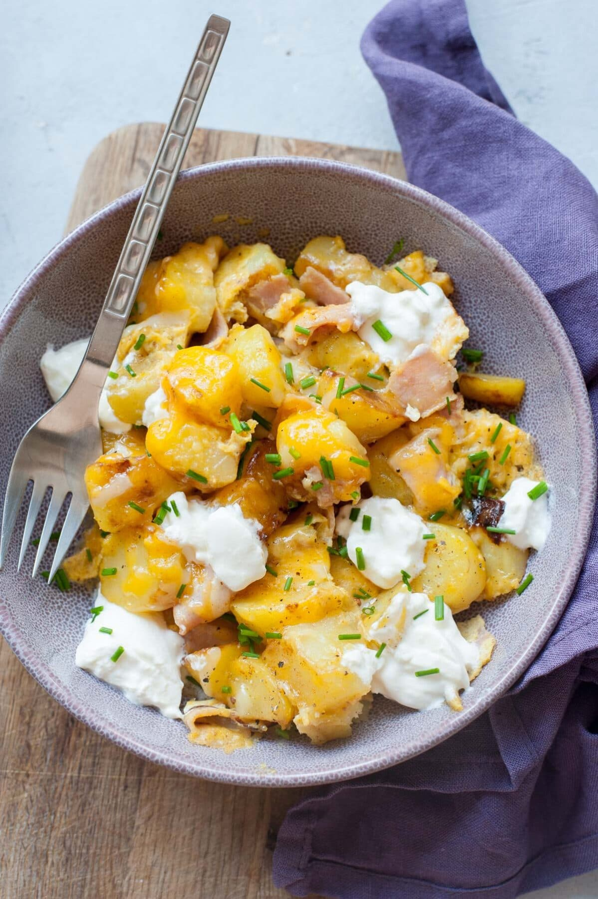

Scrambled Egg Bowl

Description
Are you ready for the best scrambled eggs you've ever had? Well then this is the recipe for you. This delicious egg bowl contains multiple
eggs that you will fry and scramble in butter. Additionally, you'll be frying deli turkey, and banana peppers. Once the eggs, and turkey have
a nice browning to them, you will be adding them to a bowl and topping them with sharp cheddar cheese and sour cream.
Ingredients
- 3 whole eggs or 1 whole egg and 3 egg whites
- 4 slices deli turkey of your choosing
- Sliced banana peppers
- 1/4 cup cheddar cheese
- 2 tablespoons sourcream
Steps
- Step 1: add your eggs to a bowel, salt them, and whisk until yolk is evenly disbursed.
- Step 2: Warm your non-stick skillet and add 1/2 tablespoon butter
- Step 3: Prepare eggs until they are about half way done. Move them to one side of pan
- Step 4: Pull apart deli turkey and start adding it to pan
- Step 5: Add banana peppers to pan
- Step 6: Once the eggs are done, mix all the ingrdients in pan together.
- Step 7: Move the contents of the skillet to a bowl
- Step 8: While the eggs are hot, add 1/4 cup of sharp cheddar across the top.
- Step 9: Add 2 tablespoons sourcream to the top.
- Step 10: Enjoy.